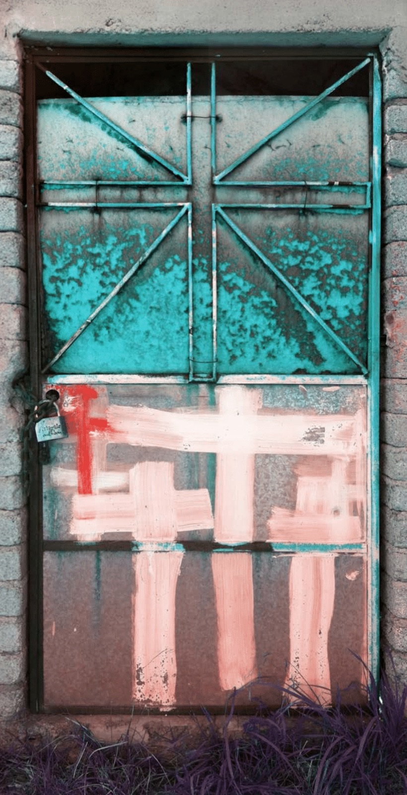

I
Death Is a Door
Doug Crocco · 2026
Metallic photo paper face-mounted to acrylic · 80 × 36 in
Edition of 3 + 1 AP
Metallic photo paper face-mounted to acrylic · 80 × 36 in
Edition of 3 + 1 AP
A door that cannot be opened and cannot be ignored. Crosses painted over corrosion; the chain that keeps the living out and the dead in. The exhibition's founding image and its plainest question — what waits on the other side?